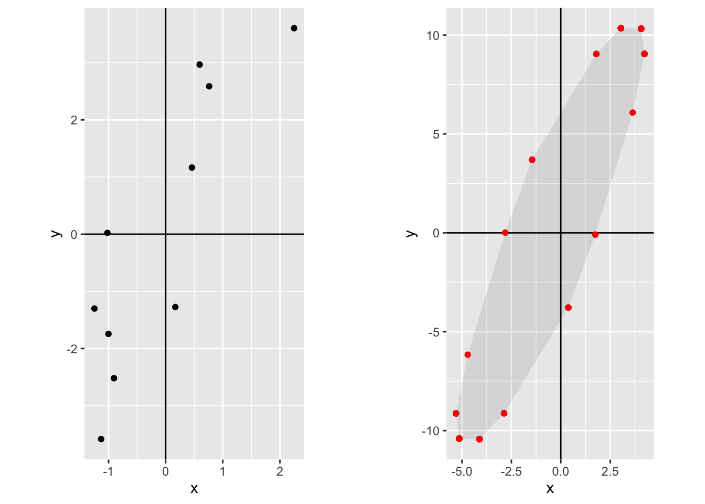
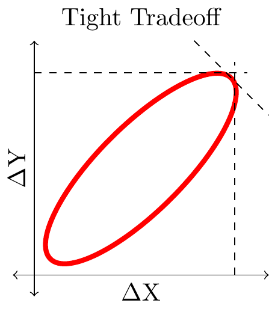
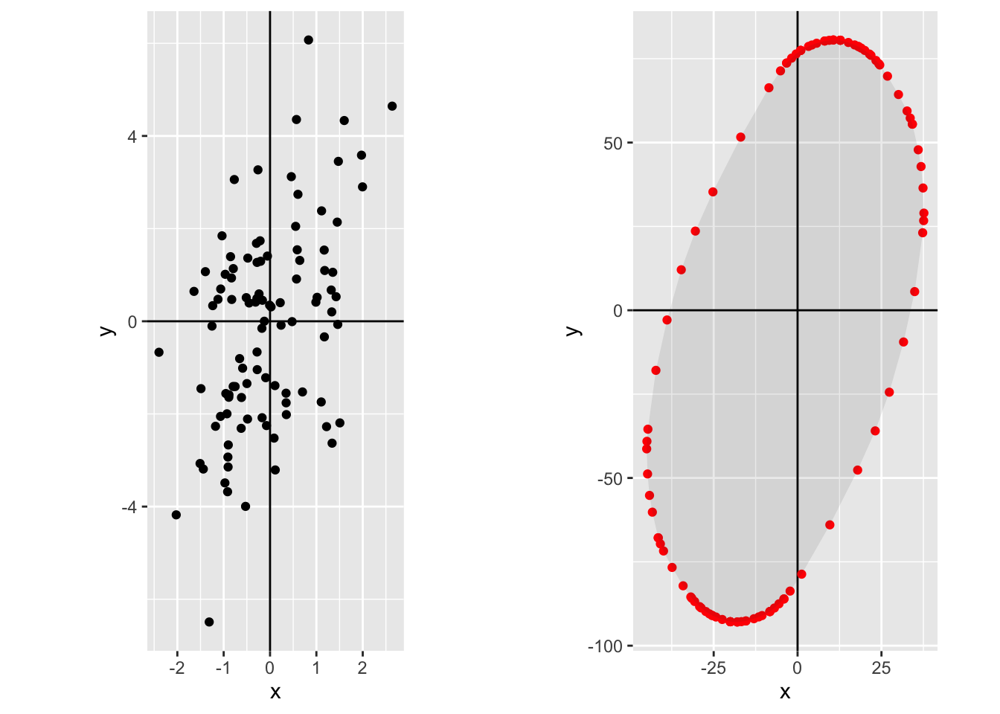
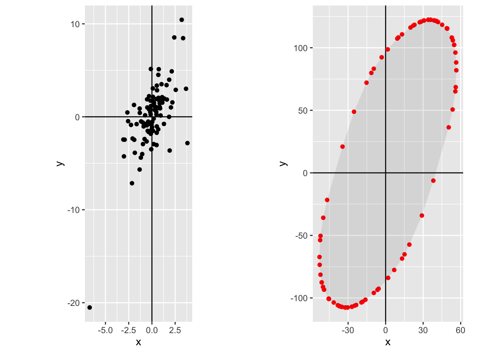
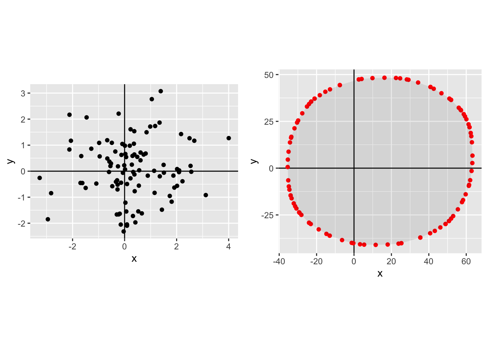

This material was first presented at MIT CODE 2021. Thanks to Sean Taylor among others for comments.
Thinking about tradeoffs? draw an ellipse. When making a tradeoff between two outcomes, \(X\) and \(Y\), it’s useful to sketch out what the tradeoff looks like, and an ellipse is often a good first-order approximation. The ellipse helps visualize the most interesting parameter: the tightness, i.e. how much the rate of tradeoff between \(X\) and \(Y\) varies as you increase \(X\).
In addition we can show that if the Pareto frontier is formed by the sum of vectors, and the vectors are drawn from a joint Normal distribution, then the expected frontier will be exactly an ellipse.
Concrete Applications:
Choosing launch criteria? draw an ellipse. Suppose you have a set of features each of which has some metric impact, \(\Delta X\) and \(\Delta Y\). If we assume that the effects are additive then we can construct a Pareto frontier, i.e. a set of all the aggregate effects on \(\Delta X\) and \(\Delta Y\) achievable by selection from the set of features. The frontier will typically look like an ellipse. You can prove that the Pareto frontier will be exactly an ellipse if the set of experiment-effects have a joint Normal distribution.
Choosing ranking weights? draw an ellipse. Suppose you are ranking items for a user using a set of features e.g. p(Like), p(Comment), etc. It is useful to sketch out the Pareto frontier, i.e. the set of outcomes achievable by different ranking algorithms. If the outcomes are additively separable functions of the item-features, and if the joint distribution of features is Normal, then the Pareto frontier will be an ellipse.
Allocating headcount? draw an ellipse. When you shuffle headcount around a company it’s hard to precisely measure the impact on different goals, however I have found it useful to sketch ellipses to make explicit the tradeoffs you face. This is particularly useful for visualizing the differences between within-team vs between-team reallocation of effort.
Tight and Loose Tradeoffs

Suppose we care about two metrics, \(X\) and \(Y\). E.g. suppose we care about DAU and time-spent, or revenue and retention, or engagement and misinformation.
It is useful to draw a Pareto frontier. A Pareto frontier will show the set of achievable outcomes for X and Y, to make the tradeoff precise. If we have a well-defined objective function then we can visually represent the optimal choice where the indifference curve is tangent to the Pareto frontier.
If your frontier is “tight” then there is not much tradeoff. The first figure shows a tight frontier, meaning that there is not much tradeoff available between X and Y. With a tight tradeoff it doesn’t matter whether we maximize X or Y or a weighted average, we’ll end up in roughly the same place anyway. Suppose we are choosing among experiments: if we observe a high positive correlation between \(\Delta X\) and \(\Delta Y\) then the choice of shipping criteria is relatively unimportant, most criteria would select the same experiments anyway. Suppose instead we are calibrating a recommender system: if we observe a high positive correlation between predictions of the two outcomes then the choice of weights is relatively unimportant, we would end up showing the same items anyway.
If your frontier is “loose” then there is a lot of tradeoff. The second figure shows a loose tradeoff: in this case the outcome does depend substantially on the relative weight we put on \(X\) and \(Y\).
Ellipses for Experiments
Suppose we have a set of experiments. Each experiment has some impact on two metrics, \(\Delta X\) and \(\Delta Y\). We visualize such a set of experiments at right.
If the set of features is separable, meaning that the impact of each feature is independent of what other features are launched, then a natural question will be the shape of the Pareto frontier formed by all possible combination of experiments.
If the distribution of experiments is mean zero and joint Normal then the Pareto frontier will be an ellipse, and it will have exactly the shape of an isovalue of the density of experiments. Thus knowing the variance and covariance of experiment results allows us to characterize the nature of the Pareto frontier we face.
Ellipses for Ranking

Suppose we are choosing a fixed set of items to show to a user, based on two metrics \(x_1\) and \(x_2\). E.g. pLike and pComment, or pDAU and quality etc. A natural question will be the shape of the Pareto frontier formed by alternative selections of items.
The Pareto frontier will be an ellipse. We show below that, if the predictions are well calibrated, the outcomes are independent (i.e. additive), and the distribution of prediction obeys a joint Normal distribution, then the Pareto frontier will be an ellipse and it will have exactly the shape of an isovalue of the density of predictions. Thus knowing the variance and covariance of predictions allows us to exactly characterize the nature of the aggregate tradeoffs we face.
Ellipses for Company Strategy
Tradeoffs are looser higher in the decision hierarchy. Suppose a company cares about two outcomes, \(X\) and \(Y\). Many different people will be making tradeoff decisions between X and Y, we can distinguish between four objectives used at different levels in the company hierarchy: \[\substack{\text{company objective}\\\text{(choose headcount)}} > \substack{\text{team objective}\\\text{(choose projects)}} > \substack{\text{shipping objective}\\\text{(choose experiments)}} > \substack{\text{algorithm objective}\\\text{(choose items)}} \]
We can think of each successive level as holding more variables fixed, and so we expect the Pareto frontiers to become successively tighter (Le Chatelier principle). We thus expect the tradeoff to be loosest at the level of overall company objectives, where we reallocate headcount. For this reason we should expect that, if the company as a whole pivots form metric \(X\) to metric \(Y\), the principal effect will be a reallocation of effort between products rather than reallocation within products.
We now walk through some of the different levels of optimization:

Different product areas have different Pareto frontiers. Typically two different product areas will have substantially different ability to affect different metrics, and we will often observe a situation like that shown on the right: team A’s choices primarily affect metric \(X\), team B’s choices primarily affect metric \(Y\).
We can also draw a combined Pareto frontier. Here we add up the Pareto frontiers of team A and B. In this case the combined frontier is somewhat tight, because the two constituent frontiers are tight. Neither individual Pareto frontier shows a substantial effect from changing weights (if we restrict weights to be positive), and so accordingly the combined Pareto frontier shows little response to a change in weights.
Note that I have drawn the frontier only approximately, the frontier achieved by combining two ellipses does not have a simple representation. When the two constituent frontiers are straight lines then the combination will be a parallelogram. (Note also that when the two frontiers are circles then the combination will be a circle).

Greater investment will shift Pareto frontiers out. Here we visualize reallocating employees from team B (the frontier shifts in) to team A (the frontier shifts out).
A combined company Pareto frontier will be loose. Here the green curve represents all the possible outcomes as you shift resources between team A and B: we have now turned a tight tradeoff into a loose tradeoff. In this case this represents that a change in company objectives will be reflected mainly in reallocation of effort between teams rather than within teams.
Appendix: Model for Normal Distributions
Suppose we have a set of items with, \(x_1\) and \(x_2\), distributed Normally: \[\binom{x_1}{x_2}\sim N\left(\binom{0}{0}, \begin{pmatrix}\sigma_1^2 & \rho\sigma_1\sigma_2 \\ \rho\sigma_1\sigma_2 & \sigma_2^2\end{pmatrix}\right).\]
We additionally let each item have a score, \(v\), which is simply a weighted sum of the two characteristics (normalizing the weight on the first characteristic to be 1): \[v=x_1 + wx_2.\]
We can write the covariance between the characteristics and the score as follows:
\[Cov\begin{bmatrix}x_1\\x_2\\v\end{bmatrix}= \begin{bmatrix} \sigma^2_1 & \sigma_1\sigma_2\rho & \sigma_1^2+ w\rho\sigma_1\sigma_2 \\ \sigma_1\sigma_2\rho & \sigma_2^2 & \rho\sigma_1\sigma_2+w\sigma_2^2 \\ \sigma_1^2+w\rho\sigma_1\sigma_2 & \rho\sigma_1\sigma_2+w\sigma_2^2 & \sigma_1^2+w^2\sigma_2^2 + 2\rho w\sigma_1\sigma_2 \\ \end{bmatrix}\]
We wish to know the total number of actions of each type, \(X_1\) and \(X_2\), for a given score threshold \(\bar{v}\):
\[\begin{aligned} X_1 &=P(v\geq \bar{v})E[x_1|v\geq \bar{v}] \\ X_2 &=P(v\geq \bar{v})E[x_2|v\geq \bar{v}]. \end{aligned}\]
We first calculate the conditional expectations:
\[\begin{aligned} E[x_1|v\geq \bar{v}] =& \sigma_1 \frac{Cov(x_1,v)}{\sqrt{Var(x_1)Var(v)}} \frac{\phi(\frac{\bar{v}}{\sqrt{Var(v)}})}{\Phi(\frac{\bar{v}}{\sqrt{Var(v)}})} \\ =& \sigma_1 \frac{\sigma_1^2+w\rho\sigma_1\sigma_2} {\sqrt{\sigma_1^2(\sigma_1^2+w^2\sigma_2^2 + 2\rho w\sigma_1\sigma_2)}} \frac{\phi(\frac{\bar{v}}{\sqrt{Var(v)}})}{\Phi(\frac{\bar{v}}{\sqrt{Var(v)}})}\\ =& \frac{\sigma_1^2+w\rho\sigma_1\sigma_2} {\sqrt{\sigma_1^2+w^2\sigma_2^2 + 2\rho w\sigma_1\sigma_2}} \frac{\phi(\frac{\bar{v}}{\sqrt{Var(v)}})}{\Phi(\frac{\bar{v}}{\sqrt{Var(v)}})} \end{aligned}\]
Next we will assume that the expected quantity of items is fixed. This implies that both both \(P(v\geq \bar{v})\) and \(\frac{\bar{v}}{\sqrt{Var(v)}}\) will be constant, and we will define: \[\begin{aligned} \gamma\equiv &\frac{\phi\left(\frac{\bar{v}}{\sqrt{Var(v)}}\right)} {\Phi\left(\frac{\bar{v}}{\sqrt{Var(v)}}\right)}P(v\geq \bar{v}) \\ X_1 =& \frac{\sigma_1^2+w\rho\sigma_1\sigma_2} {\sqrt{\sigma_1^2+w^2\sigma_2^2 + 2\rho w\sigma_1\sigma_2}}\gamma \\ X_2 =& \frac{w\sigma_2^2+\rho\sigma_1\sigma_2} {\sqrt{\sigma_1^2+w^2\sigma_2^2 + 2\rho w\sigma_1\sigma_2}}\gamma \end{aligned}\]
We thus have expressions for \(X_1\) and \(X_2\) as a function of the relative weight \(w\). We wish to rearrange these to express \(X_1\) directly in terms of \(X_2\). To help we turn to Mathematica, with the following input:1
F1[w_,p_,s1_,s2_,g_]:=g(s1^2+w p s1 s2 )/Sqrt[s1^2+w^2 s2^2+2w p s1 s2]
F2[w_,p_,s1_,s2_,g_]:=g(w s2^2 +p s1 s2)/Sqrt[s1^2+w^2 s2^2+2w p s1 s2]
Solve[{X1==F1[w,p,s1,s2,g],X2==F2[w,p,s1,s2,g]}, {X1,w}]
Simplify[First[%1]]This returns a large expression:
\[\begin{aligned} X_1(X_2) &= \frac{ \gamma^2 \rho \sigma_1 \sigma_2^3 X_2 - p \sigma_1 \sigma_2 X_2^3 + \gamma^3 \sigma_2^4 \sqrt{\frac{-\gamma^2 (-1 + p^2) \sigma_1^2 \sigma_2^2}{\gamma^2 \sigma_2^2 - X_2^2}} - \gamma \sigma_2^2 X_2^2 \sqrt{-\frac{\gamma^2 (-1 + p^2) \sigma_1^2 \sigma_2^2}{\gamma^2 \sigma_2^2 - X_2^2}} + X_2 \sqrt{(-1 + p^2) \sigma_1^2 \sigma_2^2 X_2^2 (-\gamma^2 \sigma_2^2 + X_2^2)} }{\gamma^2 \sigma_2^4 - \sigma_2^2 X_2^2}\end{aligned}\]
We can however substantially simplify this: \[\begin{aligned} X_1 &= \frac{ \sigma_1\sigma_2X_2 (\gamma^2 \rho \sigma_2^2 - p X_2^2) + \gamma^2\sigma_2^2(\gamma^2 \sigma_2^2- X_2^2) \sqrt{-\frac{(-1 + p^2) \sigma_1^2 \sigma_2^2}{\gamma^2 \sigma_2^2 - X_2^2}} - X_2^2\sigma_1\sigma_2 \sqrt{(p^2-1) (\gamma^2 \sigma_2^2-X_2^2)} }{\gamma^2 \sigma_2^4 - \sigma_2^2 X_2^2} \\ &= \frac{ \sigma_1\sigma_2X_2 p(\gamma^2 \sigma_2^2 - X_2^2) + \gamma \sigma_2^3\sigma_1 \gamma \sqrt{(p^2-1)(\gamma^2 \sigma_2^2 - X_2^2)} - X_2^2\sigma_1\sigma_2 \sqrt{(p^2-1) (\gamma^2 \sigma_2^2-X_2^2)} }{\sigma_2^2(\gamma^2 \sigma_2^2 - X_2^2)} \\ &= \frac{\sigma_1}{\sigma_2}X_2p + \frac{ \sigma_1\sigma_2(\gamma^2\sigma_2^2 - X_2^2 ) \sqrt{(p^2-1) (X_2^2-\gamma^2 \sigma_2^2)} }{\sigma_2^2(\gamma^2 \sigma_2^2 - X_2^2)} \\ &= X_2 \rho \frac{\sigma_1}{\sigma_2} +\frac{\sigma_1}{\sigma_2}\sqrt{(p^2-1) (X_2^2-\gamma^2 \sigma_2^2)}. \end{aligned}\]

We now wish to show that this curve is equal to an isovalue of the joint distribution of \(x_1\) and \(x_2\) (illustrated at right). We can write the isovalue of the joint Normal distribution of \((x_1,x_2)\) for any given \(k\) as follows:2
2 From Bertsekas and Tsitsiklis (2002) “Introduction to Probability”, Section 4.7
\[k = \frac{x_1^2}{\sigma_1^2}+\frac{x_2^2}{\sigma_2^2}-2\rho\frac{x_1x_2}{\sigma_1\sigma_2}.\]
Solving this quadratic we can write: \[\begin{aligned} x_1 &= x_2 \rho \frac{\sigma_1}{\sigma_2} \pm \frac{\sigma_1}{\sigma_2}\sqrt{-x_2^2+x_2^2\rho^2+k\sigma_2^2} \\ &= x_2 \rho \frac{\sigma_1}{\sigma_2} \pm \frac{\sigma_1}{\sigma_2}\sqrt{k\sigma_2^2-(1-\rho^2)x_2^2}. \end{aligned}\]
We can see that this will be identical to the relationship between \(X_1\) and \(X_2\) above when \(k=\frac{\sigma_2^2}{\sigma_1^2}(\rho^2-1)\gamma^2\).
Appendix: Simulations for Non-Normal Distributions
In this section I compare Pareto frontiers generated from different distribution of \((X,Y)\) from different joint distribution, and then draw the Pareto frontiers. There are a few points of interest:
- Other distributions apart from the Normal do not have the property that the Pareto frontier is equal to an isovalue of the joint density.
- In my examples the Pareto frontier of many other distributions does look roughly elliptical though not precisely an ellipse. This makes me more comfortable to use an ellipse as a first-order approximation of a Pareto frontier.
These simulations show something slightly different from what is proved in the prior section. These simulations show that as the number of experiments is large (\(N\rightarrow\infty\)) then the Pareto frontier begins to resemble an ellipse. What was proved in the previous section is that for any given \(N\) the expected Pareto frontier will be an ellipse, where we calculate the expected value of \(X\) and \(Y\) for a given rate of tradeoff.
In each case the left-hand plot shows the raw distribution, the right-hand plot shows the Pareto frontier.
Joint normal with positive correlation, small \(N\):
Joint normal with positive correlation, \(N\)=100:

Joint t Distribution with 3 degrees of freedom, \(N\)=100.

Independent Laplace, \(N\)=100:

Common Laplace factor with independent Gaussian noise, \(N\)=100:

Independent uniform, \(N\)=100:

Common uniform factor plus independent uniform noise, \(N\)=100: